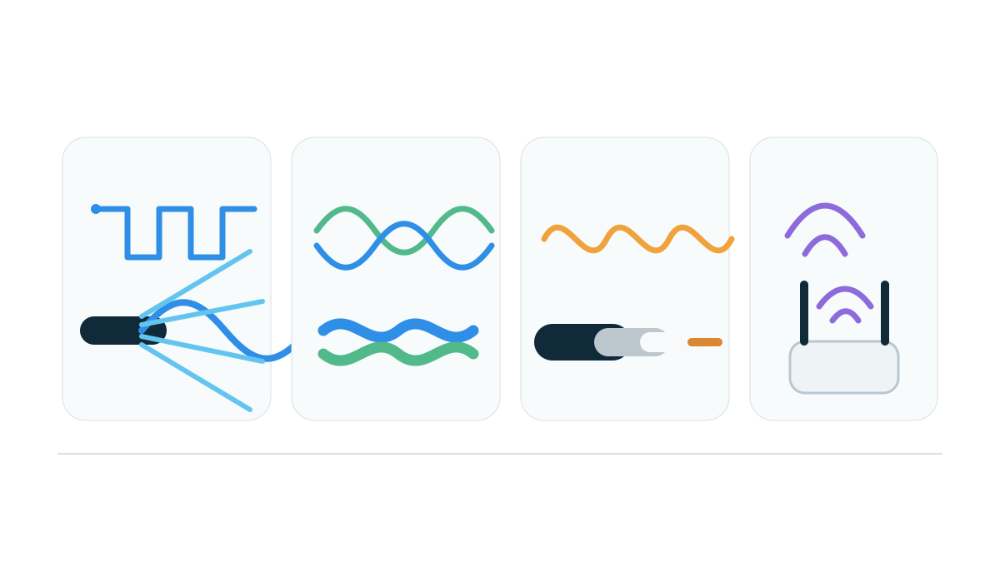

Chapter 2 · Physical Layer: Signals and Media
Part I — From Signals to Local Networks
How does a computer turn bits into physical signals that another machine can recover reliably?

Download chapter + laboratory for offline study (.zip)lesson + guided practice + knowledge check + laboratory + required files
Why this chapter matters
Section titled “Why this chapter matters”Networking diagrams often begin with a clean arrow labeled 1 Gb/s, Wi-Fi, or fiber. That arrow hides the first problem every network must solve: information inside one computer must become a physical phenomenon that another computer can distinguish from noise.
From Computer Architecture you already know that digital systems are built from physical devices. Networking extends that idea across distance.
bits in memory
↓
NIC / PHY
↓
symbols and waveform
↓
copper / fiber / radio
↓
waveform at receiver
↓
recovered symbols
↓
recovered bitsThis chapter is intentionally not an electrical-engineering course. The goal is to learn enough physical-layer reasoning to understand why links have finite rates, why distance creates delay, why media behave differently, why errors occur, and what later link-layer protocols are actually carrying.
Pause and predict. A 100 Gb/s fiber link replaces a 1 Gb/s fiber link between the same two cities. Does the first bit propagate between the cities 100 times faster? If not, what actually improved?
1. A bit is an abstraction; a signal is physical
Section titled “1. A bit is an abstraction; a signal is physical”A bit is a logical value, 0 or 1. A cable or radio channel does not transport abstract integers. It transports changing physical quantities such as:
- voltage or current on copper,
- electromagnetic energy in optical fiber,
- radio-frequency electromagnetic waves through space.
The transmitter chooses a set of physical states that the receiver can distinguish. The receiver observes an imperfect version of those states and maps them back to information.
That distinction explains an important boundary:
software thinks in bits and packets
PHY hardware thinks in symbols, timing, energy, and channel conditionsHigher layers can often ignore the exact waveform because the physical layer provides a bit-oriented service upward. But the abstraction leaks whenever rate, distance, noise, interference, synchronization, or hardware errors matter.
2. Bits are mapped to symbols, and symbols are represented by waveforms
Section titled “2. Bits are mapped to symbols, and symbols are represented by waveforms”A symbol is one signaling choice made during a signaling interval.
The simplest teaching model uses two levels:
bit 0 → low level
bit 1 → high levelA sequence:
1 0 1 1 0might therefore become a waveform that alternates between two levels.
Real links use richer encoding and modulation schemes because the physical channel has constraints. A symbol can encode more than one bit. For example, four distinguishable symbol states can represent two bits per symbol:
00 → symbol A
01 → symbol B
10 → symbol C
11 → symbol DThis gives us a crucial vocabulary:
bit rate counts information bits per second; symbol rate counts physical signaling decisions per second.
They are related, but they are not the same quantity.
3. Encoding and modulation make information compatible with the channel
Section titled “3. Encoding and modulation make information compatible with the channel”Line coding describes how digital information is represented as a sequence of channel symbols. Modulation changes properties of a carrier or waveform—such as amplitude, phase, or frequency—to represent symbols.
You do not need to memorize a catalog of schemes in this course. Instead ask what problem a scheme is solving.
A useful encoding may need to support:
- reliable distinction between symbol states,
- enough transitions for clock recovery,
- limited low-frequency/DC content,
- efficient use of channel spectrum,
- error-detection or synchronization structure.
For example, a naïve constant level for a long run of identical bits can make timing recovery harder because the receiver sees no transitions. Manchester-style coding creates regular transitions, but uses more signal changes and therefore consumes channel resources differently.
The design principle is broader than any one code:
Physical representation is an engineering trade-off between recoverability, bandwidth use, energy, complexity, and robustness.
4. The receiver must know when to sample
Section titled “4. The receiver must know when to sample”Even if two voltage levels are perfectly distinguishable, the receiver still needs to know when one symbol ends and the next begins.
Transmitter and receiver clocks are never mathematically identical. Real hardware therefore uses synchronization and clock-recovery mechanisms so sampling stays aligned with the incoming signal.
Conceptually:
continuous waveform
↓ choose sampling instants
sampled symbol values
↓ decision thresholds / demodulation
symbol sequence
↓ decoding
bit sequencePoor timing can turn a clean signal into wrong symbols because the receiver samples during a transition instead of near the stable center of a symbol.
This is one reason transitions and coding structure matter even when the data itself is digital.
5. Bit rate, symbol rate, and spectral bandwidth are different quantities
Section titled “5. Bit rate, symbol rate, and spectral bandwidth are different quantities”Networking casually uses the word bandwidth to mean a data rate such as 1 Gb/s. At the physical layer, bandwidth also has a more literal frequency-domain meaning measured in hertz.
Keep these ideas separate:
bit rate → information bits per second
symbol rate → signaling decisions per second
channel/spectral bandwidth → usable frequency range, in HzIf each symbol carries k bits in a simplified ideal model:
bit_rate = symbol_rate × kor:
symbol_rate = bit_rate / kMore bits per symbol can increase information rate without increasing symbol rate, but the receiver must distinguish more symbol states. Those states become harder to separate when noise and distortion are significant.
So there is no free capacity from simply declaring “use more levels.”
6. Real channels attenuate, distort, and accumulate noise
Section titled “6. Real channels attenuate, distort, and accumulate noise”A transmitted waveform does not arrive unchanged.
Attenuation
Section titled “Attenuation”Signal energy decreases as it travels. Repeaters, amplifiers, optical equipment, antenna design, and link budgets exist partly because received energy must remain distinguishable.
Unwanted physical energy is added by electronics, thermal effects, neighboring systems, and the environment.
Interference
Section titled “Interference”Other transmitters can occupy overlapping resources, especially on shared radio media.
Distortion
Section titled “Distortion”Different frequency components can be affected differently, changing waveform shape and timing.
A useful high-level measure is signal-to-noise ratio:
SNR = signal_power / noise_power
SNR_dB = 10 log10(SNR)Higher SNR usually gives the receiver more room to distinguish symbol states. Lower SNR means decisions become less certain unless rate, coding, power, or modulation changes.
Pause and predict. Why might a Wi-Fi link reduce its modulation/coding rate as a device moves farther from an access point even though the protocol is still “Wi-Fi”?
7. Channel capacity is finite
Section titled “7. Channel capacity is finite”A physical channel cannot carry an arbitrary number of reliable bits per second.
Two ideas explain why.
For an idealized noiseless bandwidth-limited channel, Nyquist-style reasoning relates symbol rate, channel bandwidth, and the number of distinguishable signal levels.
For a noisy channel, Shannon showed that an upper bound on reliable information rate depends on both bandwidth and SNR:
C = B log2(1 + SNR)where:
Cis capacity in bits/s,Bis channel bandwidth in Hz,SNRis a linear power ratio.
You are not expected to design a modem from this equation. The conceptual lesson is more important:
Capacity comes from physical resources and channel quality. Better coding can approach the limit; it cannot make the limit disappear.
This is the physical foundation underneath later claims about nominal link rates.
8. Copper, fiber, and radio fail differently
Section titled “8. Copper, fiber, and radio fail differently”Copper
Section titled “Copper”Twisted-pair copper carries electrical signaling. It is inexpensive and common for short wired links, but attenuation, crosstalk, electromagnetic interference, cable quality, and distance constrain performance.
Optical fiber
Section titled “Optical fiber”Fiber carries light through a guided medium. It supports very high capacity and long distances with low attenuation compared with many electrical media. Optical equipment still has finite power, dispersion, connector loss, transceiver limits, and propagation delay.
Radio supports mobility and communication without a physical cable, but the medium is shared and variable. Obstacles, reflections, fading, interference, transmitter power, antenna placement, regulatory spectrum allocation, and competing users all matter.
The important comparison is not “which medium is best?” It is:
Which physical constraints dominate this environment and workload?
A datacenter rack, a transoceanic link, a phone in a crowded classroom, and a satellite connection make very different trade-offs.
9. Duplex and sharing change how capacity is experienced
Section titled “9. Duplex and sharing change how capacity is experienced”A link can be:
- simplex: information primarily moves one direction,
- half-duplex: both directions are possible but not simultaneously on the same resource,
- full-duplex: both directions can operate simultaneously using separate resources or signaling techniques.
Likewise, a physical resource may be dedicated or shared.
Modern switched Ethernet links are normally full-duplex point-to-point connections. Wi-Fi uses a shared radio medium where stations coordinate access and experience interference/competition.
This distinction becomes central in the next link-layer chapter because the physical medium determines what kind of medium-access problem exists.
10. Serialization and propagation come from different physical causes
Section titled “10. Serialization and propagation come from different physical causes”Suppose a 1500-byte frame crosses a 1 Gb/s link.
Its serialization time is:
1500 × 8 / 1,000,000,000 = 12 μsThat answers:
How long does the transmitter need to place all frame bits onto the link?
Now suppose the link is 2,000 km of fiber and propagation is roughly 2 × 10^8 m/s:
2,000,000 / 200,000,000 = 0.010 s = 10 msThat answers:
How long does a bit already launched into the medium need to travel?
These mechanisms are independent enough that upgrading the link rate can reduce serialization from microseconds to smaller microseconds while the 10 ms physical travel time remains nearly unchanged.
M02 will build the complete performance model from this distinction.
11. PHY and MAC are different parts of a network interface
Section titled “11. PHY and MAC are different parts of a network interface”Real NIC designs often distinguish physical-layer and link-layer responsibilities.
Conceptually:
OS / driver
↓
NIC queues + DMA
↓
MAC logic
↓
PHY / transceiver
↓
physical mediumThe exact implementation varies, but the boundary is useful:
- the PHY handles physical signaling, symbol recovery, negotiation and medium-specific mechanisms;
- the MAC/link layer handles frames, link-layer addressing and medium-access behavior.
The OS normally does not expose individual analog symbol decisions. It exposes a network interface, link status, negotiated parameters, counters, and packets/frames after hardware has already performed substantial physical processing.
This is similar to Computer Architecture: software uses an abstraction while hardware implements timing-sensitive physical behavior below it.
12. Worked example — one advertised rate, several different limits
Section titled “12. Worked example — one advertised rate, several different limits”Imagine a laptop reports a nominal wireless PHY rate of 600 Mb/s.
Should a file transfer deliver 600 Mb/s of application data?
Not necessarily.
The path can lose capacity to:
PHY coding/modulation overhead
+ medium-access coordination
+ retransmissions after errors/interference
+ link/network/transport headers
+ competing stations
+ congestion control
+ CPU/storage/application limitsSo three different numbers may all be correct:
PHY signaling rate 600 Mb/s
measured network throughput perhaps much lower
application goodput lower again depending on workloadA good systems explanation states which layer each number belongs to before comparing them.
13. Observe the physical boundary without pretending software can see everything
Section titled “13. Observe the physical boundary without pretending software can see everything”Depending on hardware and permissions, Linux may expose useful interface information through tools such as:
ip link
ethtool <interface>
iw dev # Wi-Fi systems, when availablePossible evidence includes:
- link up/down state,
- negotiated Ethernet speed/duplex,
- Wi-Fi association and signal information,
- hardware counters,
- interface errors.
But remember the authority boundary:
A software-reported link rate or signal-strength estimate is useful evidence; it is not a complete oscilloscope view of the channel.
The course will continue using observable state while being explicit about what remains below the observation point.
14. Common physical-layer misconceptions
Section titled “14. Common physical-layer misconceptions”“A faster link makes signals travel faster”
Section titled ““A faster link makes signals travel faster””A higher bit rate reduces serialization time. Propagation speed is mainly determined by the physical medium and distance.
“Bandwidth always means bits per second”
Section titled ““Bandwidth always means bits per second””At higher layers it is common shorthand for capacity/rate. At the physical layer, spectral bandwidth in hertz is a distinct quantity.
“One symbol always carries one bit”
Section titled ““One symbol always carries one bit””Many modulation schemes encode several bits per symbol.
“Digital communication means the medium is digital”
Section titled ““Digital communication means the medium is digital””The logical information is digital; its physical representation is a continuous physical waveform.
“If the PHY says 1 Gb/s, applications get 1 Gb/s”
Section titled ““If the PHY says 1 Gb/s, applications get 1 Gb/s””Protocol overhead, sharing, errors, congestion, and endpoint limits reduce useful application goodput.
“Fiber has no delay because it is fast”
Section titled ““Fiber has no delay because it is fast””Fiber supports high bit rates, but light still takes time to propagate over geographic distance.
Chapter summary
Section titled “Chapter summary”The physical layer turns information into a recoverable physical process:
- Bits are logical; signals are physical.
- Symbols are signaling choices that can encode one or more bits.
- Encoding and modulation adapt information to channel constraints.
- Timing and clock recovery are necessary because receivers must know when to sample.
- Bit rate, symbol rate, and spectral bandwidth are different quantities.
- Attenuation, noise, interference, and distortion make symbol recovery imperfect.
- Nyquist/Shannon reasoning explains why reliable channel capacity is finite.
- Copper, fiber, and radio expose different physical trade-offs.
- Serialization depends on packet size and bit rate; propagation depends on distance and propagation speed.
- PHY behavior sits below the frame-oriented MAC/link layer and below most OS-visible packet interfaces.
Before continuing, explain why upgrading a transoceanic link from 10 Gb/s to 100 Gb/s can dramatically improve bulk-transfer capacity while changing the speed-of-light component of RTT almost not at all.
Systems connections
Section titled “Systems connections”[ARCH]
Section titled “[ARCH]”The PHY is where digital logic meets a physical channel. NIC transceivers, clocks, serializers/deserializers, DMA, PCIe, memory movement, and hardware queues determine how quickly packets can move between software-visible buffers and a real medium.
The OS usually exposes an interface and link state rather than raw analog waveforms. Drivers configure hardware, report negotiated rates, maintain queues, and surface counters while much symbol-level work happens below the socket API.
[PERF]
Section titled “[PERF]”Propagation speed, bit rate, coding overhead, errors, and medium sharing create lower bounds that later chapters turn into serialization delay, RTT, goodput, and queueing behavior.
Physical access, radio reception, jamming, electromagnetic leakage, and rogue transceivers show that confidentiality and availability cannot be reasoned about only at the application layer.
[DIST]
Section titled “[DIST]”No distributed algorithm can make information travel faster than the underlying channel. Geographic distance and physical failures eventually become timeouts and partial failures at higher layers.
Self-check
Section titled “Self-check”Without looking back:
- Distinguish a bit, a symbol, and a physical signal.
- Why can four symbol states carry two bits per symbol?
- Why does the receiver need timing/clock recovery?
- Distinguish bit rate, symbol rate, and spectral bandwidth.
- What does SNR tell you qualitatively?
- Why can increasing modulation order become harder at low SNR?
- Compare one important limitation of copper, fiber, and radio.
- A 1500-byte frame crosses a 100 Mb/s link. Compute its serialization time.
- Why does a faster link rate not necessarily reduce long-distance propagation delay?
- What evidence about the PHY can an OS usually expose, and what remains hidden below that interface?
Then complete the Physical Layer laboratory before moving to Network Performance.
Guided practice
Section titled “Guided practice”Time: 10–12 minutes
Materials: paper, calculator, or a text editor; no Internet access required
Prediction
Section titled “Prediction”Take the bit sequence:
1 0 1 1 0 0 1 0Use this simple teaching encoding: bit 1 → +1 V, bit 0 → -1 V, one sample per bit interval. Predict the ideal sample sequence. Then predict what a receiver using a 0 V decision threshold will do if small noise changes the sample values but does not cross the threshold.
Worked example
Section titled “Worked example”The ideal encoded samples are:
+1 -1 +1 +1 -1 -1 +1 -1Now suppose the channel produces:
+0.7 -0.6 +1.2 +0.3 -1.1 -0.4 +0.8 -0.9With a 0 V threshold, positive samples decode as 1 and negative samples as 0, so all eight bits are recovered correctly despite the noise.
If the fourth sample were pushed from +0.3 V to -0.1 V, the receiver would make a bit error. Noise matters because the receiver observes a physical signal, not abstract bits.
Guided micro-experiment
Section titled “Guided micro-experiment”First decode these samples with the same 0 V threshold:
+0.9 -0.2 +0.1 -0.1 -0.8 +0.6 +0.4 -0.7Write the recovered eight-bit sequence and mark which samples are closest to the decision boundary.
Next compare symbol rate and bit rate. Suppose a modulation scheme has four distinguishable symbols and maps two bits to each symbol:
00 → S0
01 → S1
10 → S2
11 → S3Encode 10110010 into symbols. How many symbols are transmitted? If the symbol rate is 1 Mbaud, what is the raw bit rate in this idealized mapping?
Finally compare two delay terms for a 1500-byte frame sent over a 10 Mb/s link spanning 200 km, using propagation speed 2 × 10^8 m/s:
serialization = frame_bits / link_rate
propagation = distance / propagation_speedCalculate both and state which one changes if the link rate becomes 100 Mb/s while distance and medium remain the same.
Evidence to keep
Section titled “Evidence to keep”Keep the noisy-sample decoding, the bit-to-symbol mapping, and the two delay calculations. Under them, write one sentence explaining the chain bits → symbols → physical signal → noisy observation → decoded bits. This is the physical mechanism the later Ethernet and IP chapters will treat as a link.
Knowledge check
Section titled “Knowledge check”- A 10 Gb/s link replaces a 1 Gb/s link over the same fiber path. Which term changes directly: serialization delay, propagation delay, both equally, or neither?
- A signaling scheme has four reliably distinguishable symbol states. How many bits can one ideal symbol encode?
- Explain why a long run with no signal transitions can make clock recovery difficult in a simple line code.
- Distinguish bit rate, symbol rate, and spectral bandwidth. Include units for each.
- A 1500-byte frame is transmitted at 100 Mb/s. Compute its serialization delay.
- A 1000 km path has propagation speed
2 × 10^8 m/s. Compute one-way propagation delay. - Why can a higher-order modulation scheme become unreliable when SNR decreases?
- Give one important physical limitation of copper, fiber, and radio.
- Why can a Wi-Fi PHY rate be much higher than measured application goodput?
- Which evidence can
ethtoolor Wi-Fi interface tools expose, and what physical behavior remains below ordinary OS visibility?
Required laboratory
Section titled “Required laboratory”Complete the guided practice and knowledge check before starting this lab.
Download chapter + laboratory for offline study.
Extract the ZIP, read lesson.md and lab.md, then use assignment/ for the hands-on files.
The tests and standalone runner are included. Tests for unfinished TODOs are expected to fail until you implement them.
This laboratory turns the Physical Layer chapter into a deterministic model. You will not simulate a complete radio or Ethernet PHY. Instead, you will implement the small calculations and encoding/decoding steps that make the chapter’s distinctions executable.
1. Predict before coding
Section titled “1. Predict before coding”Without running code, answer:
- Does changing a link from 100 Mb/s to 1 Gb/s change propagation speed in the same cable?
- If one symbol represents two bits, what happens to required symbol rate for the same bit rate?
- If noise moves a received sample across the decision threshold, what kind of error appears?
- Why can a reported PHY rate exceed useful application goodput?
2. Implement the deterministic model
Section titled “2. Implement the deterministic model”Complete src/physical.py.
The public tests exercise:
- serialization delay,
- propagation delay,
- symbol-rate conversion,
- SNR in decibels,
- two-level NRZ encoding/decoding,
- Manchester-style teaching encoding,
- invalid-input handling.
Run:
python3 scripts/run_tests.py --list
python3 scripts/run_tests.pyWhen exported as a standalone assignment, use:
make list-tests
make test3. Explain one physical path
Section titled “3. Explain one physical path”Choose one real interface available to you. It may be Ethernet, Wi-Fi, a VM/container-facing virtual interface, or another interface whose properties you can inspect safely.
Record what the OS can actually show with tools such as:
ip link
ethtool <interface> # when supported
iw dev # Wi-Fi systems, when availableDo not invent missing evidence. If a tool or hardware feature is unavailable, say so.
For the interface, distinguish:
- software-visible interface state,
- negotiated/reported link properties,
- physical facts you can infer,
- physical waveform details you cannot directly observe with normal OS tools.
4. Compare serialization and propagation
Section titled “4. Compare serialization and propagation”Calculate both terms for:
1500-byte frame
1 Gb/s bit rate
2000 km path
2 × 10^8 m/s propagation speedThen repeat only the serialization term at 100 Gb/s.
Explain why bulk capacity changes dramatically while the geographic lower bound barely changes.
5. Decode a noisy teaching signal
Section titled “5. Decode a noisy teaching signal”Use your NRZ encoder to generate levels for:
1 0 1 1 0 0 1Then manually perturb one received level so it crosses the threshold. Decode again and identify exactly which bit changes.
This is deliberately simple. The goal is to make the receiver decision visible before later courses or optional study introduce realistic coding/modulation/detection.
6. Finish with a systems explanation
Section titled “6. Finish with a systems explanation”Write a short answer to the guiding question:
How does a computer turn bits into physical signals that another machine can recover reliably?
Your explanation must use all of these terms correctly:
bit
symbol
waveform/signal
medium
bit rate
symbol rate
noise
receiver decision
PHY
MACThe next chapter, Network Performance, assumes these physical distinctions and turns them into end-to-end delay and throughput models.